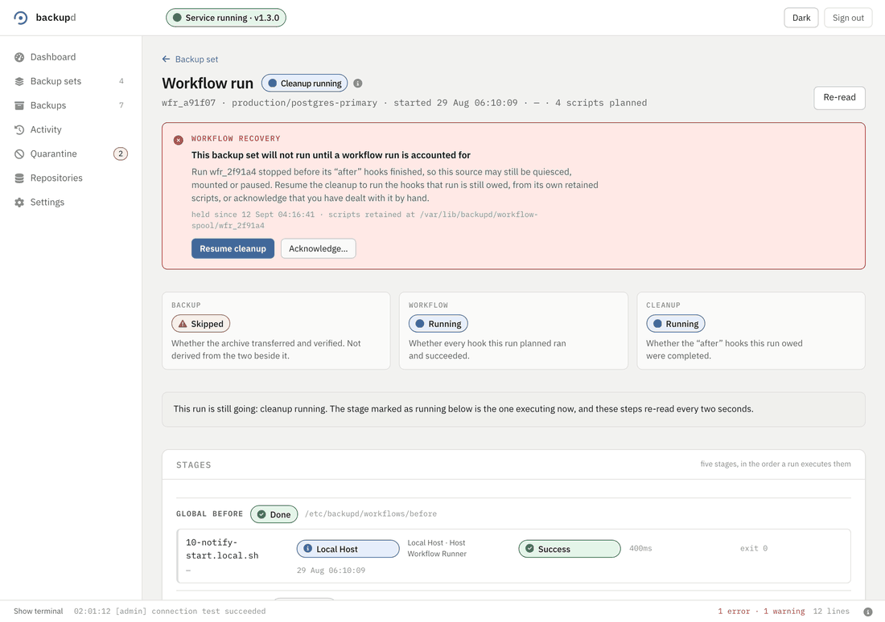
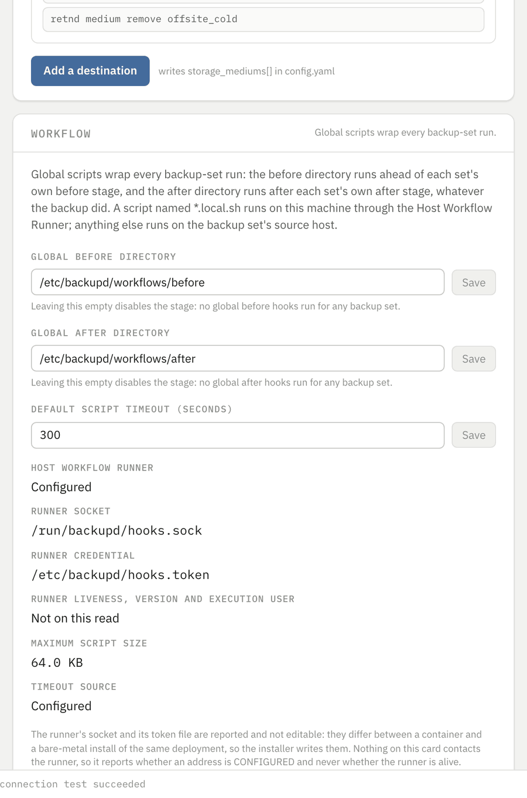
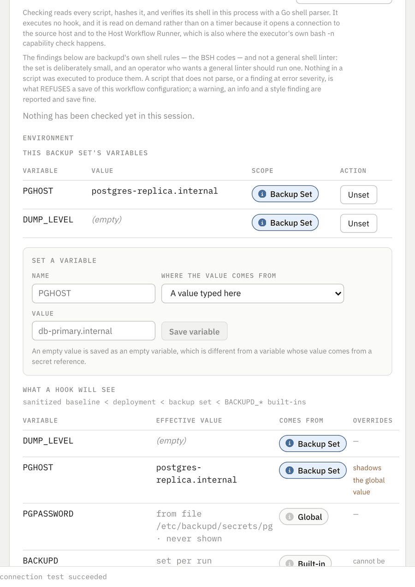
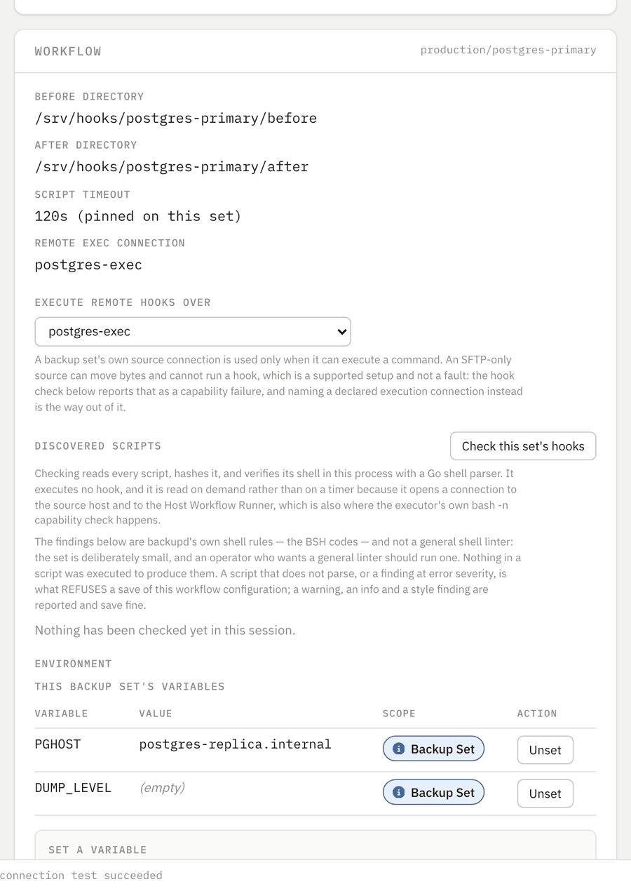
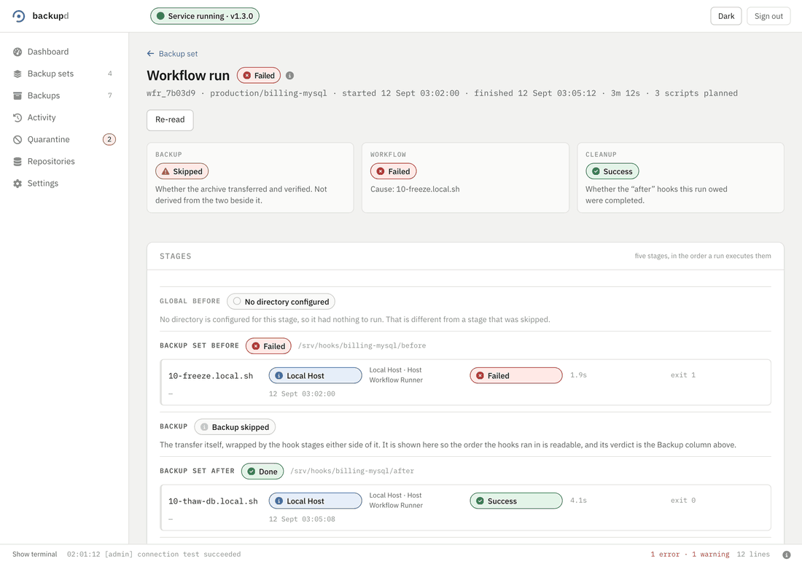
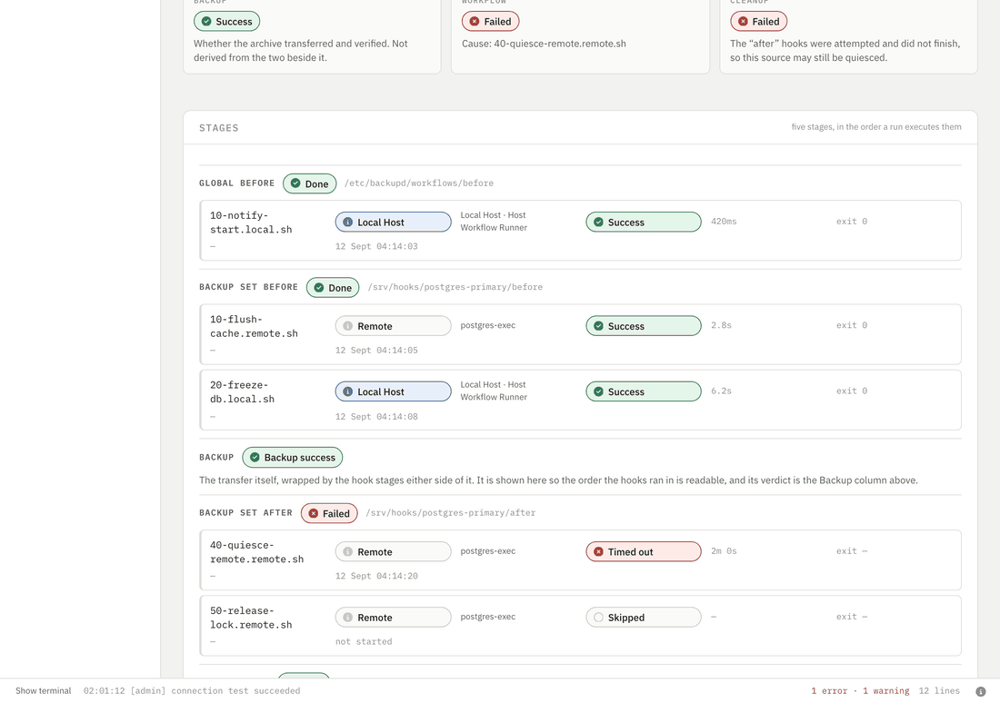
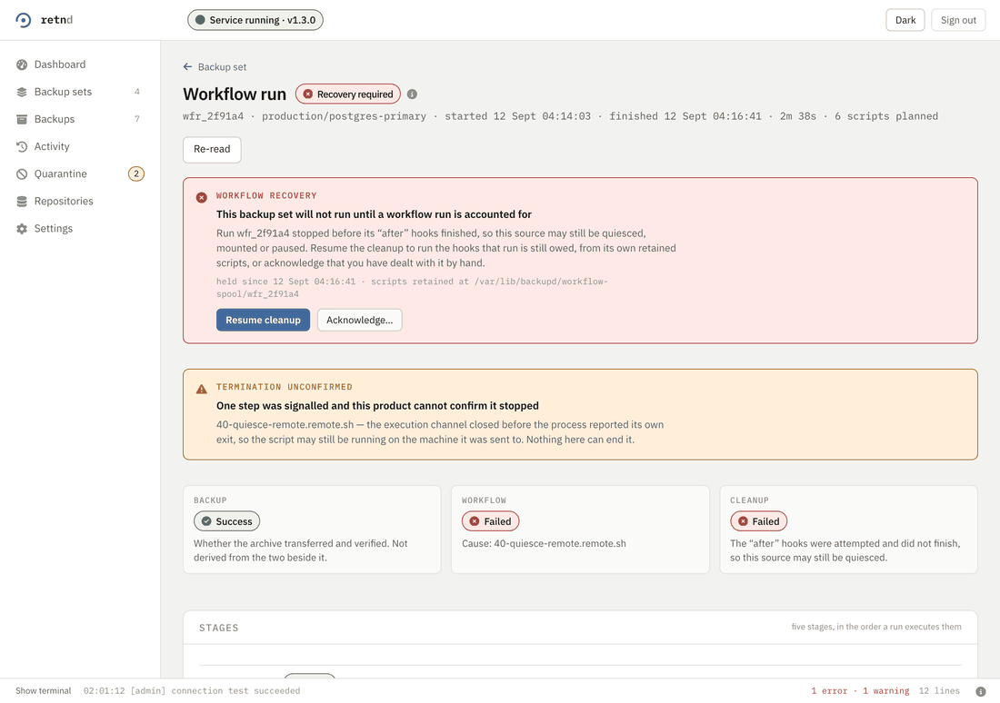
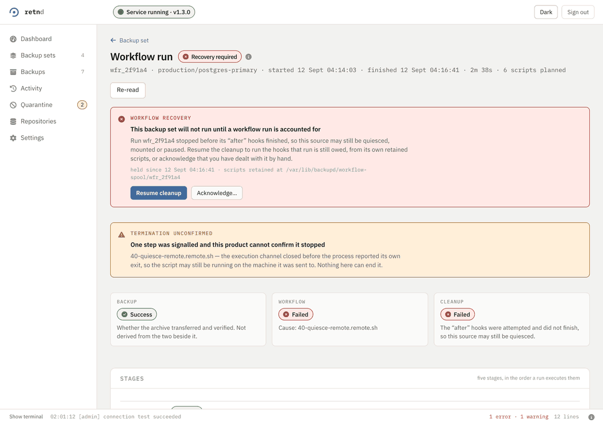
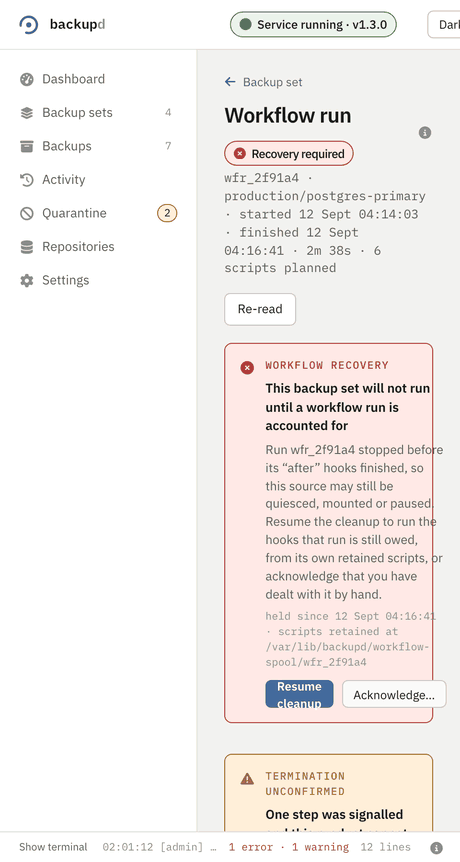

Scripted backup workflows
The useful backup of a live system is taken with the system in a state somebody put it in: a database quiesced, a snapshot taken, a cache flushed, an application stopped. Every deployment already does that, with cron and a wrapper script, and the wrapper script is where the failures live. It keeps no record of what it ran. It cannot tell you which step failed. It has no answer at all to the case where the machine died between quiescing the database and unquiescing it.
This is that wrapper script, with the parts a wrapper script cannot have. An operator puts Bash files in a directory and backupd runs them as ordered, individually observable steps around every backup-set run, with one durable record of what ran, what it printed, and what is still owed. It is deliberately not a CI engine: no DAGs, no parallel steps, no per-step images, no plugins, no YAML pipelines, no browser script editor.
The five stages, in the one order they run, including the ones that had nothing to run.
Watch it → ClipThree verdicts, side by side, because a good backup beside a machine still quiesced is not one answer.
Watch it → ClipWhat a crash leaves behind, and the two ways out of it. There is no dismiss.
Watch it →The five stages, and what “global” means
Every backup-set execution is one workflow run with five stages, in one order, serially:
| Stage | What it is for |
|---|---|
| Global before | What every backup set on this deployment needs doing first. |
| Backup-set before | What this one set needs: quiesce this database, snapshot this volume. |
| The backup | The existing run, unchanged. Not a hook step. |
| Backup-set after | Undo what this set's before stage did. |
| Global after | Undo the deployment-wide part, and notify. |
“Global” means inherited by every individual backup-set run, not once per batch. A pass over three sets runs the global before stage three times, once wrapped around each of them, and the global hooks get the same merged environment as the set they are wrapping. That definition was chosen over “once per batch” deliberately, because the two produce different cleanup obligations from the same directory and only one of them can be reasoned about per set.
The after stages unwind in the reverse of the order the before stages were entered. Entering a stage's scope is its own durable write, made before the first side-effecting command in it, and that write is what the cleanup is owed against. So a global-before failure leaves the global after stage eligible and the backup-set after stage never eligible — the set's scope was never entered, and nothing in it is owed an undo. A backup-set-before failure leaves both after stages eligible.

An unset stage directory means the stage is disabled. A configured directory that exists and is empty still enters its scope, so its after stage still runs. A configured directory that is missing is a refusal rather than a stage that silently runs nothing, because a stage that quietly does nothing is how an unquiesce disappears.
The workflow root, and the names of things
Hook scripts live under one approved absolute directory, workflows.root. A stage is a directory name inside it, so moving the root re-points every backup set's hooks at once — which is why a root change is verified against every set before it saves.
The root itself may be a symlink, because on a NAS it is usually a mount point an operator declared. A stage directory may not: the permissions protecting a link say nothing about the ones protecting its target, so this product will not execute scripts it found through one. Declare the target instead.
A script's name says where it runs
| Name | Runs on |
|---|---|
NAME.local.sh | the machine backupd is installed on, through the Host Workflow Runner |
NAME.remote.sh | the host this backup set pulls from, over an exec-capable SSH connection |
The full rule is ^[0-9A-Za-z][0-9A-Za-z._-]*\.(local|remote)\.sh$. Regular files only, symlinks refused. A plain *.sh with no target suffix is refused rather than guessed: a hook that quiesces a database has to run on the machine holding the database, and guessing wrong is silent.
Names are held to conservative ASCII for reasons that are all about reading a log six months later. Whitespace in a filename turns one audit line into two. A control character does worse. A Cyrillic е reads identically to a Latin e and names a different file. A leading dot is an editor's backup, a partial download or a scratch copy far more often than it is a script somebody meant to run, so this product never runs one.
Ordering is LC_ALL=C ls, and nothing cleverer
Within a stage, scripts run in bytewise order over the whole basename, target suffix included. Not locale-aware, not “local ones first”, not “by the name part with the target as a tiebreak”. It is exactly LC_ALL=C ls, which is the one ordering an operator can reproduce on their own machine without running this product. Number your scripts — 10-, 20-, 30- — and the order is the one you can see.
Who else can write to it
A directory anywhere above a hook script that some other local account can write to is a refusal. Nothing about this is subtle: if another account can drop a file into a directory this product executes out of, that account can run code as whatever the hooks run as. Unlike a secret file, a sticky directory earns no exemption here — a 1777 hook directory is a root shell for any local account, and the sticky bit does not change that for a file the script author owns.
A script is read once, through a descriptor whose custody was checked, and the path it was found at is not handed back out, so nothing can re-open the file after the snapshot was taken. World-readable is fine and deliberately allowed; world-writable is not.
Local hooks run outside the container, and why
A .local.sh hook means “run this on the machine backupd is installed on”. The engine cannot run one, and this is not an oversight to be fixed: the engine's image is distroless and has no shell at all, its container is read-only and non-root, and every Linux capability is dropped. Those properties are the product's own security contract, written down in the runtime contract with gates that fail a build which weakens them.
So the shell is bought somewhere else. A Host Workflow Runner is a separate process on the host, built from the same commit as the engine and extracted from the same image by the installer, supervised as backupd-workflow-runner.service. The engine asks it to run a hook over a Unix-domain socket — never a TCP port — and what crosses that socket is the script's bytes, never a path, so the far side never re-opens a file the engine already vetted.
The runner refuses to run as root, refuses an engine whose version is not exactly its own, and requires an installation-scoped credential on every connection. Each hook then runs in its own ephemeral container with every capability dropped, no new privileges, a read-only filesystem, a non-root user, no network and a process limit. No Docker socket is mounted into a hook container under any name. The runner never pulls an image: one that is not already on the host is a refusal, not a download.
Two mounts and one file, and the one carrying the scripts is read-only. Nothing else. It is still distroless, read-only, non-root and cap_drop: ALL, and a check fails the build if that stops being true. The runtime contract has the exact mounts and the exact per-hook launch.

runner_health check, and a terminal has backupd workflow-runner status.Anyone who can write a file into a hook directory can run commands on this machine, as the account the runner gives hooks. That is not a weakness in the design; it is what the feature is. The protections are about making sure that set of people is exactly the set of administrators an operator intended: an approved root, a custody check on every directory above a script, conservative names, and a runner that is unprivileged rather than root. backupd deliberately offers no sudo, su or command-prefix field anywhere in the configuration — a hook that needs a privileged action needs a narrowly scoped sudoers entry the operator wrote and can read back, not a product feature that escalates on their behalf.
Remote hooks need a credential that can run a command
A .remote.sh hook runs on the host the backup set pulls from, and here the product runs into its own advice. The SSH setup guide spends four sections teaching an operator to make the transfer account incapable of running anything: a chroot, and a forced internal-sftp. That is correct for a credential whose only job is to hand over files, and it means that credential cannot be a hook executor.
So exec capability is proven rather than assumed. An SFTP-only account is refused with the server's own answer — This service allows sftp connections only. — and a forced-command account is refused too, which matters more than it looks: a command= in authorized_keys does not fail, it runs a different program and exits zero. Silent success on the wrong program is worse than a refusal. In both cases artifact backup over that same credential keeps working unchanged; only the hook use is refused, and the refusal names the missing capability.
The fix is a second account, created exactly like the first but keeping a real shell, declared once as an execution connection and named by the sets that use it. A hook runs as that user and this product never escalates.
The script is streamed over the SSH channel's stdin: nothing is uploaded, no file is written on the far host, and nothing is left behind if the connection drops mid-hook. No environment value and no secret reaches a remote command line, so nothing appears in that host's process table. No PTY is allocated, so stdout and stderr stay separate streams.
Not guaranteed: a hook that deliberately detaches a child — nohup, setsid, a double fork — is outside the termination guarantee. When a cancel or a timeout cannot be proved to have killed everything, the step records termination as unconfirmed and says so at the top of the run, rather than reporting a clean stop it cannot vouch for.
The environment a hook gets, and the secrets it does not see
A hook's environment is built, not inherited. It gets none of the daemon's own environment, and that is a deliberate refusal rather than an omission: the daemon's block can hold a repository passphrase, and handing it to a script somebody dropped into a directory would make every hook a credential dump and would do it silently.
Four layers, in this order:
| Layer | Where it is set | Beats |
|---|---|---|
| Sanitized baseline | this product | — |
| Deployment-wide | workflows.environment, or Settings | the baseline |
| Per backup set | the set's own environment | the deployment's |
BACKUPD_* built-ins | the run itself | everything |
The first three are ordinary specificity. The fourth is different in kind, and it is handled differently for that reason: the built-ins are the run's own facts, so the whole BACKUPD_ prefix is refused in configuration, at validation time, rather than accepted and then overridden at merge time. A key an operator can write and this product silently discards is a key that looks like it works.

The nineteen built-ins
Every hook is told which run it belongs to, which stage it is in, where it runs, and what has happened so far: BACKUPD, BACKUPD_RUN_ID, BACKUPD_BACKUP_SET_ID, BACKUPD_BACKUP_SET_NAME, BACKUPD_PHASE, BACKUPD_STEP_ID, BACKUPD_STEP_NAME, BACKUPD_STEP_TARGET, BACKUPD_SOURCE_HOST, BACKUPD_SOURCE_PATH, BACKUPD_DESTINATION, BACKUPD_WORK_DIR, BACKUPD_BACKUP_STATUS, BACKUPD_WORKFLOW_STATUS, BACKUPD_CLEANUP_STATUS, BACKUPD_BACKUP_ERROR_CODE, BACKUPD_STARTED_AT, BACKUPD_RECOVERY and BACKUPD_CLEANUP_REASON.
A before hook is told BACKUPD_BACKUP_STATUS=unknown, which is a real value rather than an empty one, because an unset variable and one saying “nobody knows yet” read identically in test -z and an after script that treats the second as the first will take the wrong branch exactly once, in production.
A secret is a reference, never a pasted value
There is no new secret store. A configured value is either a literal or a reference to exactly one of a file, an environment variable name, or a command whose output is the value — the same custody shape the rest of the product's credentials already use. There is no field an operator can paste a secret into.
A resolved value exists only while a step runs. Nothing resolved reaches a plan, a plan digest, a spool file or a journal row, and that is structural rather than careful: the plan has no field that could hold one. Output is redacted as it streams, at every chunk boundary, so a credential split across two reads of a pipe is still caught, and the needles are matched longest-first so user@host is not left as user@[REDACTED].
The redactor matches the values it was given. A script that base64-encodes a credential and prints the result has printed something no needle matches. Redaction is a safety net under a mistake, not a licence to print secrets on purpose.
Bash runs exactly as written
Hooks run under bash --noprofile --norc, so nothing in a ~/.bashrc can change what a hook does — otherwise the same script behaves differently for two operators and the difference is invisible in the script. A session arriving with BASH_ENV or ENV set is refused rather than run, because those name a file of somebody else's choosing to execute before the hook's first line.
Nothing is injected. No set -e, no -u, no pipefail, no xtrace. That is the harder choice of the two and it is the right one: injecting shell options silently changes the meaning of every script an operator already wrote and tested by hand, and the first time it matters is the run where a hook that used to keep going now stops halfway. If you want those options, write them at the top of your script, where the next person reading it can see them.
Every hook gets a bound. A backup set can pin one; otherwise the deployment's workflows.script_timeout applies; otherwise the built-in default of five minutes. There is deliberately no spelling of “wait forever”, because a hook with no bound is a backup set that stops running and never says why.
A script that is not a shell program cannot be saved
The footguns that injecting set -euo pipefail would have caught are answered a different way: by reading the script. Saving either workflow configuration verifies every discovered hook script first, and a script that does not pass refuses the save — 409 WORKFLOW_SCRIPT_REJECTED over HTTP, with the position of each blocking finding in the response rather than in a sentence a client would have to parse, and the same refusal from backupd settings workflow patch and backupd backup-set workflow patch.
Nothing executes a script body to do this. The verdict comes from a real Bash parser linked into the product (mvdan.cc/sh), so it arrives even when no runner and no source host is reachable.
Then six rules, this product's own. The namespace is BSH — “backupd shell” — deliberately not ShellCheck's SC, because these are not ShellCheck's rules and a reader who searches for SC2086 should not land here:
| Code | What it is about | What it costs |
|---|---|---|
| BSH001 | An expansion in a command argument that is not quoted, so the shell splits it on whitespace and expands globs in it before the command sees it. | info. Reported, never blocks. |
| BSH002 | A cd whose failure nothing notices. When it fails, everything after it runs against the wrong tree. | warning. Reported, never blocks. |
| BSH003 | An rm -rf that becomes a recursive delete of a root-level path the moment an expansion in it is empty. | error. This one refuses the save. |
| BSH004 | set -e and a pipeline with no set -o pipefail: a pipeline's status is its last command's, so the dump failing behind the compressor leaves set -e nothing to trip on. | warning. One finding per script. |
| BSH005 | An unquoted expansion inside [ ... ], which is a run-time syntax error when the value is empty — the case the condition was usually written for. | warning. Reported, never blocks. |
| BSH006 | No #! interpreter line. It changes nothing here, since the bytes are handed to bash; it changes what happens when somebody runs the file by hand. | style. Always at 1:1. |
A parse error or an error-severity finding refuses the save. Everything else is reported and never blocks, which is the whole design: a verification that refuses everything is one an operator turns off. There is deliberately no BSH007 yet.
A script too large to read, or nesting shell constructs deeper than this check will parse, is reported not examined — never drawn as a pass — and does not block the save. A prefix of a shell script is a different program, so it is not examined rather than partly examined.
Reading the whole verdict before a backup runs
Validation reports two answers and never folds them into one: valid_for_backup and workflow_valid. A backup set can be perfectly sound while its hooks are not, and that combination has a specific consequence — backups of it are refused for as long as its workflow cannot be snapshotted — which is worth saying rather than leaving an operator to infer from a single red light.
Fifteen named checks run, and a check nobody could run is reported skipped rather than green: a deployment with no remote hooks is never shown a passing tick for a remote syntax check that did not happen.

line:col and what to write instead.backupd validate workflow production/postgres-primaryEverything this product can establish about a set's hooks without running one. Exit 0 when the workflow is sound, 1 when it is not; --json emits the whole report.
Three verdicts, and why they are never one
A run records three statuses, separately, and none of them is derived from the others: the backup, the workflow, and the cleanup. The reason is one sentence: the backup succeeded and the cleanup did not means there is a good backup sitting beside a machine that is still quiesced, and no single Boolean can hold that.
| What happened | Backup | Cleanup | The run's state says why |
|---|---|---|---|
| A before hook failed | skipped | runs, for the eligible stages | failed, canceled or timed_out |
| The backup itself failed | failed | runs | failed |
| An after hook failed | success | failed | cleanup_failed |
| The hooks were bypassed | success | skipped | skipped, and it says bypassed |
A failing before hook gives skipped rather than failed for the backup, because nothing was attempted — the run's own state carries why, and the failing script is named. cleanup_failed is the worst terminal state this feature has: the backup may be perfectly fine and the machine is not back the way the workflow found it.

One terminal per script, and it refuses to be a terminal
Every step owns its own read-only view of exactly what that hook printed, streamed by cursor while the run is live. Each record keeps its stream identity — stdout or stderr — and a sequence number from one run-monotonic counter; a merged view is labelled best-effort capture order, because two pipes have no total order to claim and pretending otherwise would be a claim the kernel does not make.

A script's output is untrusted input to a terminal emulator, and it is treated that way. Stdin is disabled, hyperlinks are not activated, title and window control sequences have no effect, nothing in the output can trigger an action, scrollback is bounded, and nothing is rendered as HTML. A hostile hook can draw whatever it likes in that panel and change nothing outside it.
Output is persisted through the engine first and only then fanned out, asynchronously, through bounded queues. A follower that stops reading — a browser tab on hotel wifi — is dropped from the queue rather than waited for, and catches up afterwards from the journal, which is the authority. A slow viewer cannot slow a database quiesce down; that would be a correctness bug, not a performance one.
Output is bounded per step and per run, and the truncation marker sits in the sequence, in position, so a client never renders it as something the hook printed. Past the bound the hook keeps running with its output still being drained, because a hook blocked on a full pipe is a backup that never finishes.
backupd workflow run steps wfr_2f91a4
backupd workflow run log wfr_2f91a4 --step <step-id> --followThe same records the browser reads, by cursor, with --json emitting one record per line so a script reads it with a line reader rather than an incremental JSON parser.
What a crash leaves behind
This is the case the feature exists to answer, and the one a wrapper script has no answer to at all. The engine quiesces a database in a before hook and the machine dies. Nothing is scheduled to unquiesce it. Nobody is told.
A step that was running when the process died becomes interrupted, and deliberately not failed: “this script reported failure” and “this script's outcome is unknown and its side effects may be half-applied” are different facts, and a recovery has to be able to tell them apart.
On the next start, the engine reconciles. Every interrupted run is marked recovery_required, the backup sets those runs belong to are blocked — scheduled runs suspended, a manual run refused, a health warning raised, the run's script spool retained — and nothing is replayed. Automatically re-running a half-applied cleanup is not a safe default, so it is not a default.

| The way out | What it does | What it costs |
|---|---|---|
| Resume cleanup | Runs only the eligible after stages, out of that run's own captured script bytes, re-verified against the digest recorded when the run was planned. | It executes your cleanup scripts. It does not re-run the backup. |
| Acknowledge | Unblocks the set on your word that the machine has been put back by hand. Requires a reason, which is recorded durably against the run. | Nothing runs. The set is unblocked with its cleanup never having run, and the record says who said so and why. |
A resume executes the bytes that run captured, with the environment that run was planned with and its secrets re-resolved from their references. Editing /workflows or the configuration while the daemon was down therefore does not change what the recovery does — which is the point, because reopening a directory after a crash cannot guarantee the same cleanup code is still in it. A resumed after stage is told BACKUPD_RECOVERY=1 and BACKUPD_CLEANUP_REASON=interrupted_run, so a script can tell a recovery from an ordinary cleanup and stay idempotent.
A resume that cannot account for everything lands back at recovery_required, durably. Two processes cannot unwind one run at once: a scope moves to “in progress” durably before a hook runs, so a resume typed in a terminal and one clicked in a browser serialise on a row rather than both executing.
A cleanup script may run twice: once in the run it belongs to, and once from a recovery whose first attempt got part of the way. “Unquiesce this database” should succeed when the database is already unquiesced. Check the state and make it so, rather than assuming what the previous step left.
backupd workflow recovery show
backupd workflow recovery resume-cleanup <run-id>
backupd workflow recovery acknowledge <run-id> --reason "unquiesced by hand, DBA ticket 4471"--reason is required, and it is required for a reason: the whole value of an acknowledgement is answering, six months later, why a backup set was unblocked without its cleanup ever running. Beside a serving engine, the reads fall back to the journal but the two writes are refused, because that process holds the hold as well as the journal does and a resume made around it would unblock a set that process would go on refusing.
Both the terminal procedure and the browser-only one are written out in the recovery guide and its no-terminal counterpart.
Dark mode and narrow windows
The workflow surfaces are held to the same two constraints as the rest of the interface, so they get the same two pictures.


What this does not guarantee
The same rule as everywhere else on this site: naming the uncomfortable half is the only thing that makes the rest worth reading.
- A browser cannot start a backup run on any deployment this repository builds. The API's destructive operations are behind a deployment-level gate and the only implementation shipped returns false unconditionally, so
run_backup_setis refused everywhere until #92 supplies a real gate. Workflow runs are therefore the scheduler's. The one bypass this feature has lives on that same route, which means “an administrator may bypass the hooks” is a code path with test coverage and no deployment in which it can be reached. - A local hook needs the deployment to mount the host plane, and not every platform offers local hooks at all. A
.local.shhook needs three things present in the deployment: the workflow root mounted into the engine read-only, the runtime directory holding the runner's socket, and the runner's credential file. Every deployment profile that advertises local hooks now carries all three, and the platforms that cannot host a runner say so rather than offering a capability they do not have — so the question to ask is not “are the mounts there” but “does my platform answer yes”. The install guide and the runtime contract carry that answer per platform, along with the runner's own prerequisites; check yours before you rely on a local hook. If the answer is no, remote hooks are unaffected, because they need no runner. The symptom of a deployment that is not set up for it is therunner_healthcheck in the validation report failing, orbackupd workflow-runner statusfinding nothing to ask, before any hook has run. - A detached remote descendant is outside the termination guarantee. A hook that runs
nohup,setsidor a double fork can leave a process this product cannot prove is gone. Termination is recorded as unconfirmed and the step's working directory is kept as the forensic record rather than tidied away. - Redaction cannot follow a secret a script has transformed. The redactor matches resolved values. A script that encodes a credential before printing it has printed something no needle matches.
- Power-loss cleanup is not guaranteed.
recovery_requiredis an answer about the next start. Between the crash and that start, whatever a before hook did to a machine stays done; there is no agent on the far host to undo it. - Every picture on this page comes from a mock. Every clip here was recorded against the development server's in-memory fixture API by
docs/site/tools/capture-workflows.mjs, not against a running engine. The layout, the copy, the flow and the interaction are the real ones. The data is not.
Where these clips come from
Each one is a list of frames with how long to hold each, captured between real interactions with the running application, by a committed script rather than by hand — docs/site/tools/capture-workflows.mjs over the shared harness the rest of the site's clips use. Re-running it reproduces them, which is the only reason to trust a picture in documentation: a hand-recorded GIF is one nobody can re-take after the interface moves. The web interface page explains why they are clips and not videos, and is honest about where that determinism stops.
Ten clips, about 2.5 MB between them, loaded lazily. On the machine they were taken on, three consecutive runs of the script produced byte-identical files — which is a stronger result than the harness promises and is worth saying as an observation rather than as a guarantee: none of these ten surfaces is one the application animates on its own, so the exception the harness names does not arise here. A different ffmpeg build is a different matter, and nobody has checked that.